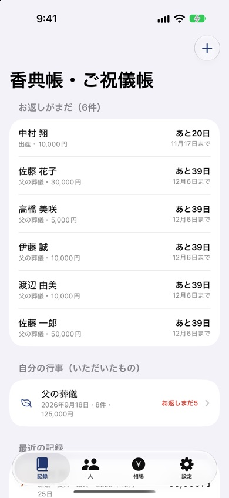
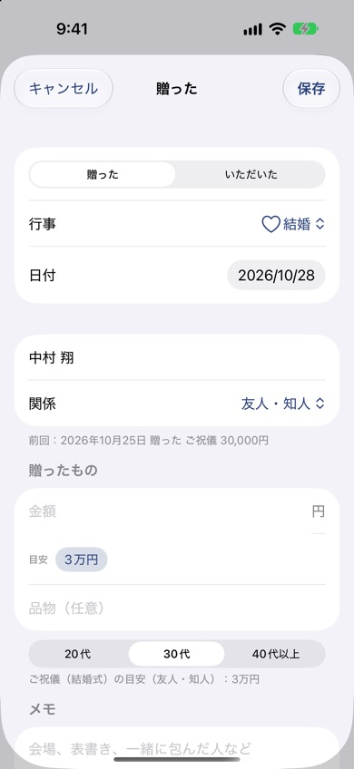

香典帳・ご祝儀帳
香典・ご祝儀・お年玉・お祝いなど、冠婚葬祭のやりとりを記録するiPhoneアプリです。「前回いくら包んだか」がすぐわかり、いただいたもののお返しも忘れません。
iPhone（iOS 17以降）・無料（広告あり）


できること
- 贈ったものの記録：香典・ご祝儀・出産祝い・お年玉などを、相手・関係・金額・品物とともに記録。前回のやりとりも表示します。
- 相場の目安：関係（親・兄弟・友人・職場など）と自分の年代から、金額の目安をその場で表示します。
- 葬儀・結婚式の香典帳に：自分の行事を作ると、いただいた香典やご祝儀をまとめて記録。合計額とお返しの進み具合がわかります。
- お返しの管理：半返し〜3分の1の目安額と、行事に合わせた期限（香典返しは四十九日のあと等）を自動で入れ、1週間前と当日に通知します。
- 人ごとの履歴：その人からいただいた額・贈った額の合計と、これまでのやりとりを一覧できます。
- CSVで書き出し：Excelやスプレッドシートで開けます。
相場の早見表
よくある質問
葬儀でいただいた香典をまとめて記録できますか
はい。「自分の行事を作る」で葬儀を作ると、いただいた香典を次々に記録でき、合計額とお返しの進み具合（何件済んだか）がわかります。CSVでExcelにも書き出せます。
お返しの期限はどう決まりますか
行事の種類から目安を自動で入れます。香典返しは四十九日のあと1か月以内、出産内祝いや新築内祝いは1か月以内などです。期限は自由に変えられ、1週間前と当日に通知します。
記録はどこに保存されますか
この端末の中だけに保存し、外部には送りません。機種変更に備えて、設定からCSVで書き出しておけます。
お問い合わせ
メール: tanacount.support@gmail.com
返信までお時間をいただく場合があります。